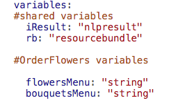
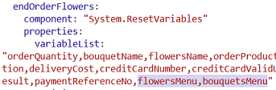
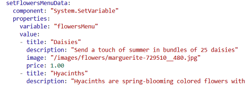
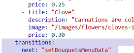
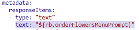

Oracle Intelligent Bots Advanced Training - Lab 3b (Dialog Flow - Using the Common Response Component)
Oracle Intelligent Bots Advanced Training - Lab 3b (Dialog Flow - Using the Common Response Component)This is the second part of a two-part lab on the dialog flow feature.
In the previous lab, we interacted with menus that were simple lists. In this lab, we'll create a richer user experience for the main menu and the flower and bouquet menus. We'll use the Common Response component (CR component), which is a powerful widget that allows you design complex bot interactions.
 Prerequisites
Prerequisites
- Complete Lab 3a.
 Use Apache FreeMarker to Generate Order Numbers
Use Apache FreeMarker to Generate Order Numbers
Before we get into setting up CR components, we'll change the bot so that it provides a unique order number for each order.
As it currently stands, the value for order number is static (24hrsflwrs-1234567). Let's change it so that it is unique for every order. It will take the form 24hrsflwrs-<unique_number>.
- Click
 to open the dialog flow editor.
to open the dialog flow editor. - Locate the
startOrderFlowersstate in the flow. - Change the value of the
valueattribute to"24hrsflwrs-${.now?long}" - Train the bot (by clicking
 ).
).
Now, every time you make an order the order number will be based on the current date and time in milliseconds.
 Create Mock Data for the Menus
Create Mock Data for the Menus
So far, the Flowers and Bouquet menus read the strings for their display labels from their respective entities. For this they use an expression like ${bouquetName.type.enumValues} to reference a context variable of the entity type.
In preparation for displaying a richer UI, we'll create mock data in the dialog flow. Mock data enables you to build and test your bot while a custom component developer works on providing you access to real data. In a later lab, we'll see how easy the switch from mock data to live data can be.
Create States for the Menus
- Click to open the dialog flow editor.
- Create two new context variables of type string called
flowersMenuandbouquetsMenuand insert them below the#OrderFlowers variablescomment:flowersMenu: "string" bouquetsMenu: "string"
 - Navigate to the
endOrderFlowersstate and add the two new variables to the end of thevariableListattribute.
 - Create a state from template by:
- Scrolling back to the top of the dialog flow, clicking the + Components button, clicking Variables, and clicking Set variable.
- From the Insert After dropdown, selecting startOrderFlowers.
- Making sure the Remove Comments toggle is set to ON.
- Changing the state name from
setVariabletosetFlowersMenuData. - Clicking Apply.
- Repeat step 4, except
- From the Insert After dropdown, select setFlowersMenuData.
- Replace
setVariablewithsetBouquetsMenuData.
Next we'll adjust those states, including the adding of the mock menu data.
Prepare the Flowers Menu
Let's start with the
setFlowersMenuDatastate.- Scroll to the
startOrderFlowersstate. - Change the value of the
next:transition to"setFlowersMenuData" - Go to the
setFlowersMenuDatastate. - Edit the
System.SetVariablecomponent and set thevariableattribute to"flowersMenu". - Set the cursor to the right of the
valueattribute and create a new line. - Open the
resources/Flower-Images.txtfile that comes with this lab, copy its contents, and paste them to the line you just created under thevalueattribute.This content is an array containing the mock data for the Flowers menu.
The pasted content should be aligned like in this screenshot:
 - Add the following transition at the very bottom of the state (right below where you just pasted the menu data):
transitions: next: "setBouquetsMenuData"
Here's how it aligns in the dialog flow editor:

Prepare the Bouquets Menu
Now we'll do the same for the
setBouquetsMenuDatastate.- Go to the
setBouquetsMenuDatastate. - In the
setBouquetsMenuDatastate'sSystem.SetVariablecomponent, set value of thevariableattribute to"bouquetsMenu". - Set the cursor to the right of the
valueattribute and create a new line. - Open the
resources/Bouquets-Images.txtfile that comes with this lab, copy its contents, and paste them to the line you just created under thevalueattribute. - Add the following transition to the state:
transitions: next: "checkFlowerBouquetEntity"
Where We Are Now
After configuring these changes, you should still be able to run your bot like before by typing
hiand then selecting the Order Flowers menu option. There isn't any visual change yet, since we haven't yet hooked up these new structures to the user interface. That's what we'll do next.What We Just Did
- We used an Apache FreeMarker expression in the definition of the
flowersMenuand thebouquetsMenuto define an array of data. Each element in the array is an object of four attributes:title,description,image,price.
Troubleshooting
If you see any validation errors, or if the bot refuses to run anymore, check the following:
- Each indent is 2 characters long. Make sure your pasted content is really indented with a number of spaces that is divisible by 2.
- In each state, the
transitionsattribute must align with thecomponentattribute (indented 4 spaces from the left margin). - If the navigation behavior is different than before, check the values you have given to the
transitionattributes'nextelements.
Tip of the trade: If you want to force a save, briefly click in the address bar of your browser. Clicking outside the page triggers the auto-save function. We recommend doing this frequently to avoid accidental loss of your work.
 Build the Rich Flowers Menu
Build the Rich Flowers Menu
In this part of the lab, we are going use the Common Response component (CR component) to improve the flowers menu that is rendered by the orderFlowers state. We'll start by generating some scaffolding for the component from a template and then fill in the details.
- Scroll to the top of the dialog flow, click the + Components button, click User Interface, and select Common response - card.
- From the Insert After dropdown, select orderFlowers.
- Make sure the Remove Comments toggle is set to ON.
- Click Apply.
- In the dialog flow editor, replace the CR component code with the following.
Of particular note is
textresponse item that we are adding and which was not part of the component template.cardResponse: component: "System.CommonResponse" properties: processUserMessage: true translate: metadata: responseItems: - type: "text" text: "" - type: "cards" cardLayout: "vertical" cards: - title: "Card title" description: "Card description" imageUrl: " " iteratorVariable: rangeStart: rangeSize: actions: - label: "Postback action" type: "postback" payload: action: "someAction" variables: user.someVariable: "someValue" transitions: - Within the
propertiesattribute, add the following two properties:variable: "flowersName" nlpResultVariable: "iResult" - Set the value of the
textattribute of the first response item (type: "text") to a value of"${rb.orderFlowersMenuPrompt}".
 - Set the value of the
iteratorVariableattribute to"flowersMenu"(and be sure to include the quotation marks ("").This is the variable that holds the mock data for the Flowers menu.
- Change the value of
titleattribute from"Card title"to"${flowersMenu.title}". - Change the value of the
descriptionattribute from"Card description"to"${flowersMenu.description}" - Set the value of the
imageUrlattribute to"${advtImagesHost.value}${flowersMenu.image}" - Change the value of the
actionattribute that is nested underpayloadfrom"someAction"to"copyValueAction". - Change
user.someVariabletoflowersName. - Change the value of
flowersNamefrom"someValue"to"${flowersMenu.title}". - At the same level as
flowersName, add another variable:flowerCost: "${flowersMenu.price}" - Change the value of the
labelattribute from"Postback action"to:"Buy for ${flowersMenu.price} USD" - At the bottom of the
cardResponsestate, add the following actions:actions: copyValueAction: "setFlowerNameToOrderProductName" textReceived: "orderFlowers"Theactionsattribute must be indented 2 spaces more than thetransitionsattribute and the actions themselves need to be indented a further two spaces. - Comment out or remove the existing
orderFlowersstate. - Rename the
cardResponsestate toorderFlowers.
Here's what the new orderFlowers state should look like:
orderFlowers:
component: "System.CommonResponse"
properties:
variable: "flowersName"
nlpResultVariable: "iResult"
processUserMessage: true
translate:
metadata:
responseItems:
- type: "text"
text: "${rb.orderFlowersMenuPrompt}"
- type: "cards"
cardLayout: "vertical"
cards:
- title: "${flowersMenu.title}"
description: "${flowersMenu.description}"
imageUrl: "${advtImagesHost.value}${flowersMenu.image}"
iteratorVariable: "flowersMenu"
rangeStart:
rangeSize:
actions:
- label: "Buy for ${flowersMenu.price} USD"
type: "postback"
payload:
action: "copyValueAction"
variables:
flowersName: "${flowersMenu.title}"
flowerCost: "${flowersMenu.price}"
transitions:
actions:
copyValueAction: "setFlowerNameToOrderProductName"
textReceived: "orderFlowers"
What We Just Did
That was a lot of coding! To review, we have:
- Created a new dialog state using a CR component.
- Set the value of the the card response iterator attribute to the variable that holds the mock data (
flowersMenu). - Set card property values to reference the iterator, which is referenced using the same name the context variable has.
- To preserve the previous behavior of the
orderFlowersstate, added thevariableand thenlpResultVariableattributes to the CR component. This ensures that entity slotting will work with the CR component. - To handle the case in which users type text instead of selecting an action from the card menu, added the
textReceivedaction to thetransitionssection. Thetextreceivedtransition is followed when users type into the message field instead of selecting from the menu options.As we want users to select from the menu, the
textReceivedaction loops them back to the start of the orderFlowers state to give them another chance to use the menu.
 Test the New Flowers Menu
Test the New Flowers Menu
- In the tester (
 ), start by entering
), start by entering Hi.(This is the flow inexperienced users are likely to follow.)
- When you get to the Flowers menu, make a selection.
- When you get to the question of how many flowers you want to buy, press the tester's Reset button.
- Test again, but this time start by typing "I'd like to buy red roses" into the Message field.
Instead of being presented with a sequence of menus, you should be immediately asked how many flowers you want to buy. This demonstrates that entity slotting is working.
Troubleshooting
If the menu isn't successfully rendered and the tester window shows an error complaining about an unexpected angle bracket (<), you may have not set the flowersMenu context variable properly.
For example, if the next transition on the startOrderFlowers state isn't set correctly, the flowersMenus variable doesn't get populated.
Another reason could be that you configured the flowersName variable to the iterator propery instead of flowersMenu
Note: In case you're wondering why the CR component's imageUrl attribute uses ${advtImagesHost.value} as the first expression, it's because this lab has the flower images saved in Application Container Cloud Service (ACCS). We parameterized the host URL in case different trainings use different hosts.
 Build the Rich Bouquets Menu
Build the Rich Bouquets Menu
While playing with the bot you may have recognized that it's either the Flowers or the Bouquets menu that is shown, depending on what message you enter. For this to work right, both menus have to have the same data structure. In this part of the lab, we'll create the Bouquets menu, which more or less is a variant of the Flowers menu you created before
- Scroll to the top of the dialog flow, click the + Components button, click User Interface, and select Common response - card.
- From the Insert After dropdown, select orderBouquet.
- Make sure the Remove Comments toggle is set to ON.
- Click Apply.
- In the dialog flow editor, edit the CR component configuration so the state looks like the following.
Again, note the
textresponse item that we are adding. It is not created by default.cardResponse: component: "System.CommonResponse" properties: processUserMessage: true translate: metadata: responseItems: - type: "text" text: "" - type: "cards" cardLayout: "vertical" cards: - title: "Card title" description: "Card description" imageUrl: "" iteratorVariable: rangeStart: rangeSize: actions: - label: "Postback action" type: "postback" keyword: payload: action: "someAction" variables: user.someVariable: "someValue" transitions: - Within the
propertiesattribute, add the following two properties:variable: "bouquetName" nlpResultVariable: "iResult" - Set the value of the
textattribute of the first response item (type: "text") to a value of"${rb.orderBouquetMenuPrompt}".
- Set the value of the
iteratorVariableattribute to"bouquetsMenu"(the variable that holds the mock data for the Bouquets menu). - Change the value of
titleattribute from"Card title"to"${bouquetsMenu.title}". - Change the value of the
descriptionattribute from"Card description"to"${bouquetsMenu.description}" - Set the value of the
imageUrlattribute to"${advtImagesHost.value}${bouquetsMenu.image}" - Change the value of the
actionattribute that is nested underpayloadfrom"someAction"to"copyValueAction". - Change
user.someVariabletobouquetName. - Change the value of
bouquetNamefrom"someValue"to"${bouquetsMenu.title}". - At the same level as
bouquetName, add another variable:flowerCost: "${bouquetsMenu.price}" - Change the value of the
labelattribute from"Postback action"to:"Buy for ${bouquetsMenu.price} USD" - At the bottom of the
cardResponsestate, add the following actions:actions: copyValueAction: "setBouquetNameToOrderProductName" textReceived: "orderBouquet"Theactionsattribute must be indented 2 spaces more than thetransitionsattribute and the actions themselves need to be indented a further two spaces. - Comment out or remove the existing
orderBouquetstate. - Rename the
cardResponsestate toorderBouquet.
This is how the orderBouquet state should look.
orderBouquet:
component: "System.CommonResponse"
properties:
variable: "bouquetName"
nlpResultVariable: "iResult"
processUserMessage: true
translate:
metadata:
responseItems:
- type: "text"
text: "${rb.orderBouquetMenuPrompt}"
- type: "cards"
cardLayout: "vertical"
cards:
- title: "${bouquetsMenu.title}"
description: "${bouquetsMenu.description}"
imageUrl: "${advtImagesHost.value}${bouquetsMenu.image}"
iteratorVariable: "bouquetsMenu"
rangeStart:
rangeSize:
actions:
- label: "Buy for ${bouquetsMenu.price} USD"
type: "postback"
keyword:
payload:
action: "copyValueAction"
variables:
bouquetName: "${bouquetsMenu.title}"
flowerCost: "${bouquetsMenu.price}"
transitions:
actions:
copyValueAction: "setBouquetNameToOrderProductName"
textReceived: "orderBouquet"
 Test the New Bouquets Menu
Test the New Bouquets Menu
- In the tester (), start by entering
Hi. - Select Order Flowers and then choose the bouquet option.
You should be prompted for how many you want to order.
- Click the tester's Reset button.
- Test again, but this time start by typing
I want to buy a box of tulipsinto the Message field and then select the Order Flowers option.With entity slotting working you should immediately be asked how many boxes of tulips you'd like to order without having to traverse the full Flowers menu.
One More Thing
Here's a feature we haven't tried out yet.
- In the tester, click Reset.
- Change the value of the CR component's
cardLayoutattributeverticaltohorizontal. - In the tester, type
Hiand observe the difference.